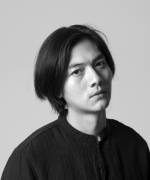
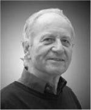

All Stone
奥斯顿建筑事务所(All Stone)共9个合伙人，
由庄子玉先生领衔，Christian Schaller先生与Johannes Schilling
教授均为多次德国国家建筑奖获得者，Stefan Schmitz教授作为科隆市形象大使在德国乃至欧洲享有胜誉
，Martin Weischer教授为欧洲顶级的建筑能耗专家，Reinhard Angelis先生，
Frederic Ripperger先生，Judith Kusch女士及Reinhard Angelis先生也都是建筑及规划方面的专家。
同时公司聚集了超过80名注册建筑师，城市规划师和景观建筑设计师协同工作。
德国管理核心以及，与来自欧洲，北美，与中国的国际化的设计团队。以及经验丰富的中国本地配合团队。

庄子玉
合伙人/主持建筑师
Reinhard Angelis
合伙人

Christian Schaller
合伙人
Stefan Schmitz
合伙人
Johannes Schilling
合伙人
Martin Weischer
合伙人
Judith Kusch
合伙人
吴梦笛
合伙人
田迪
合伙人